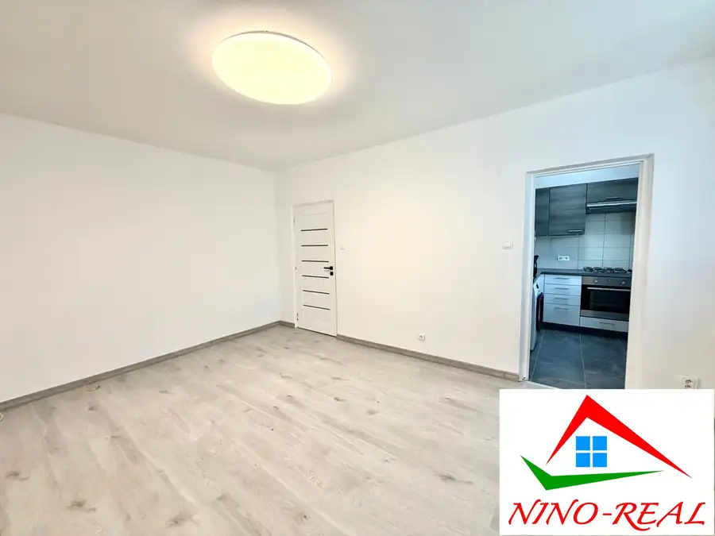
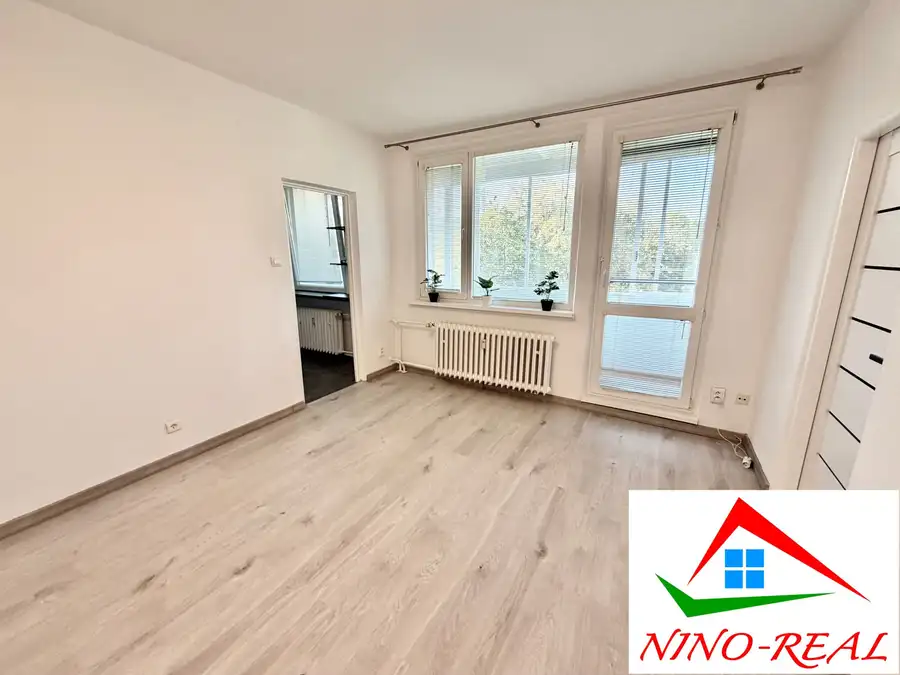
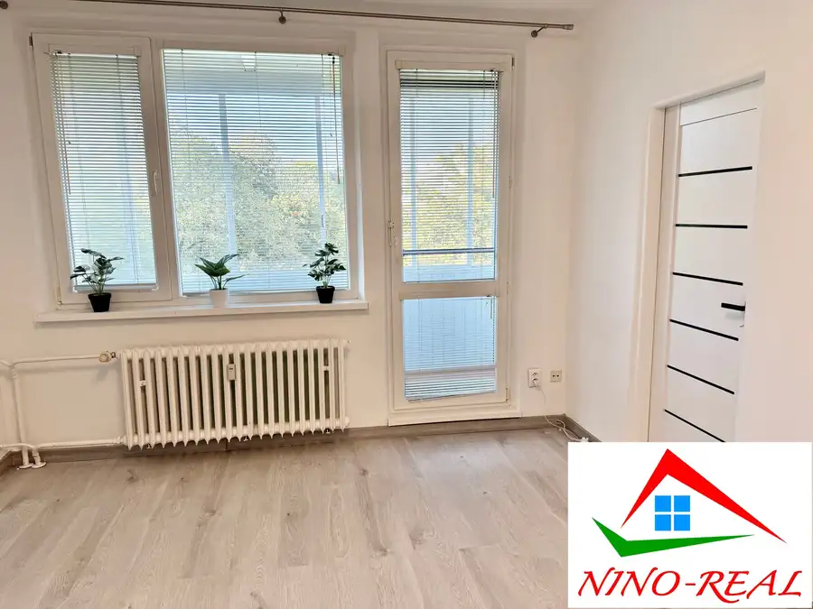
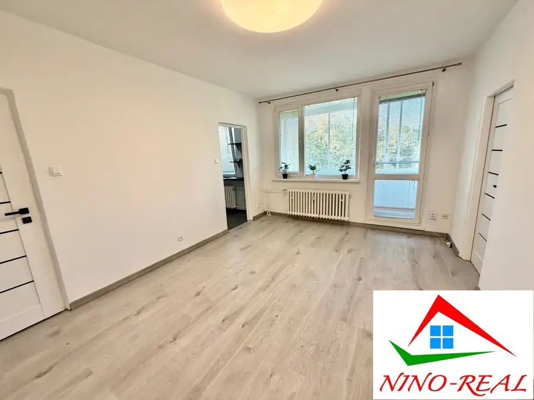
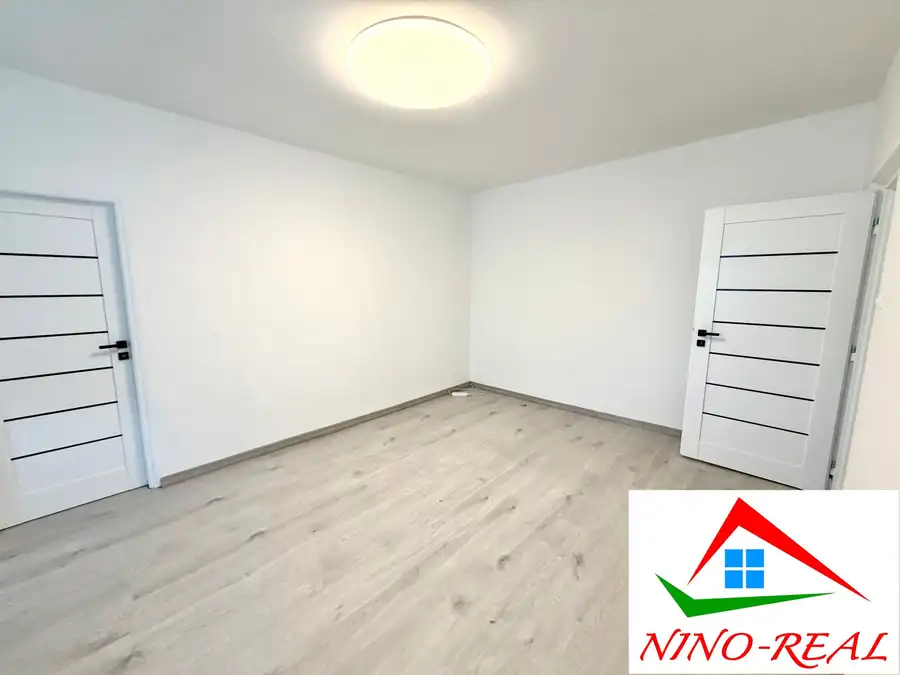
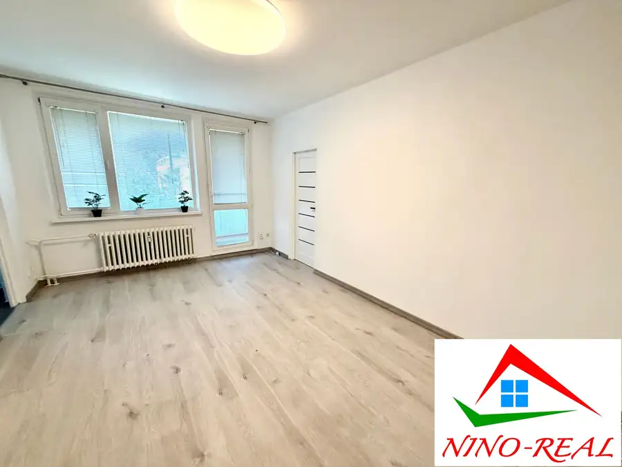
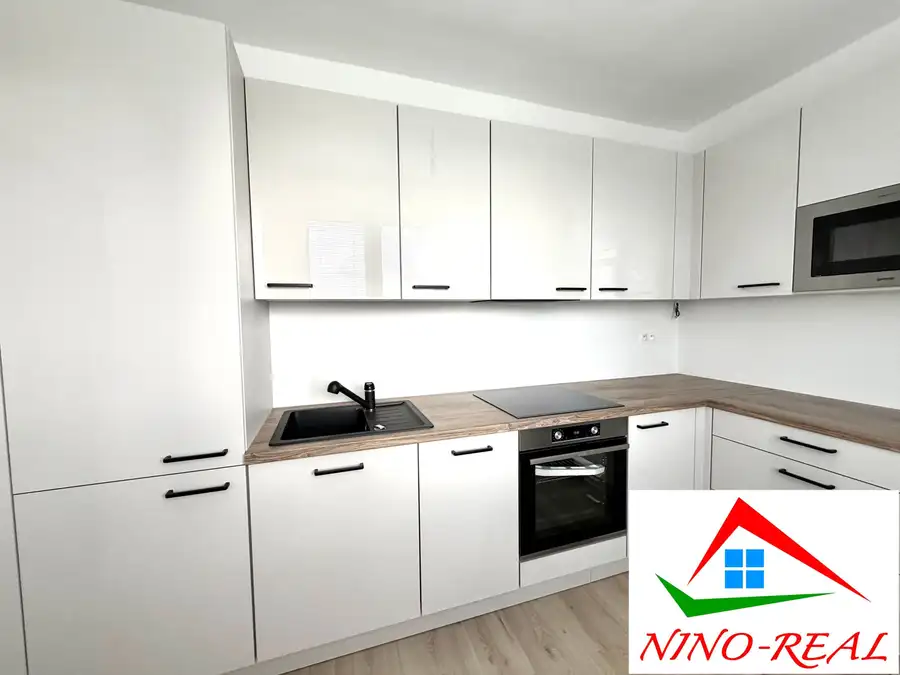
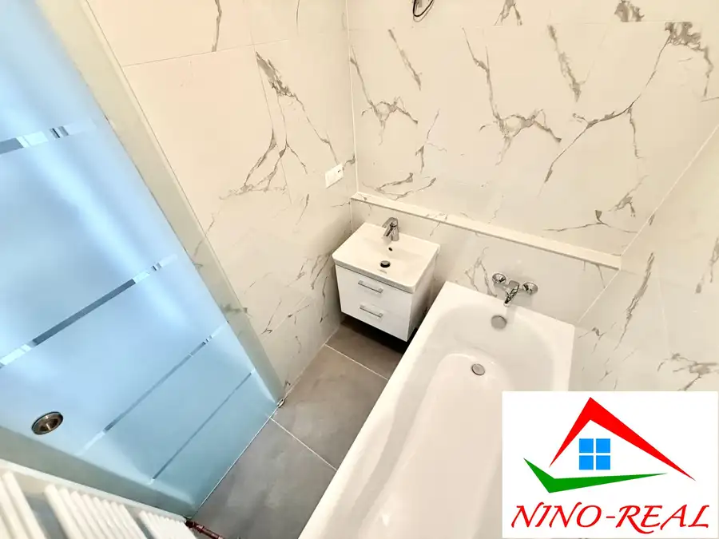
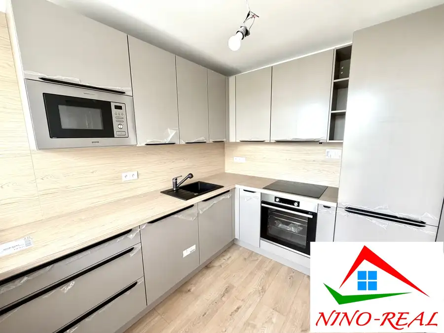

Bagarova – 3i byt s takmer 12-metrovou loggiou
Dúbravka, Bratislava






- Dispozícia3-izbový
- Plocha46.43 m²
- Poschodie4. z 6
- StavČiastočná rekonštrukcia
- VlastníctvoFiremné
- Energetická triedaB
O nehnuteľnosti
POZRITE si TENTO „MALÝ, ale MILÝ " 3i BYT v DÚBRAVKE – LOKALITE PLNEJ ZELENE. BYT sa nachádza na BAGAROVEJ ulici v blízkosti KOMPLETNEJ OBČIANSKEJ VYBAVENOSTI.INFO O BYTEMENŠIA VÝMERA - byt má 46,43 m2 + LOGGIA. K bytu prislúcha PIVNICA.LOGGIA – 11,70 m2 s orientáciou na severozápad;PODLAŽIE – byt sa nachádza na 4. podlaží/6;ZATEPLENÝ BYTOVÝ DOMPOZEMOK POD DOMOM - je v spoluvlastníctve vlastníkov bytov v dome;BYTOVÝ DOM - bol daný do užívania v roku 1971; ENERGETICKÝ CERTIFIKÁT - BMESAČNÉ NÁKLADY - 150,- € + elektrina a plyn;REKONŠTRUKCIA ZAHŔŇA:•rohová kuchynská linka s plynovou varnou doskou a elektrickou rúrou•dlažba v kuchyni a v predsieni•laminátové plávajúce podlahy v izbách•nové interiérové dvere •nové vymaľovanie•plastové okná so žalúziami•vstavaná skriňa v predsieni•kúpeľňa s vaňou•samostatná toaletaVÝHODY LOKALITYKOMPLETNÁ OBČIANSKA VYBAVENOSŤ - nákupné centrum (Lidl, Billa) , MŠ, ZŠ, SŠ, zdravotné stredisko, pošta, DOM KULTÚRY DÚBRAVKA, Kostol Ducha Svätého;DOSTUPNOSŤ – MHD v blízkosti – č. 20, 23, 83, 84, N 21, X5; veľmi dobré dopravné napojenie na diaľničný obchvat, centrum mesta a OC BORY MALL;PARKOVANIE – pri bytovom dome; CENA: 233 900,- €VRÁTANE PROVÍZIE a obchodno-zmluvného servisu.PROVÍZIA ZAHŔŇA kvalitné realitné a právne služby spojené s prevodom nehnuteľnosti:– vypracovanie kompletnej zmluvnej dokumentácie (zmluva o budúcej zmluve, rezervačná zmluva, zmluva o prevode vlastníctva bytu, návrh na vklad vlastníckych práv, prípadné dodatky, protokol o prevzatí a odovzdaní nehnuteľnosti…)– notárske poplatky spojené s overovaním podpisov predávajúceho na zmluve o prevode vlastníctva bytu– správny poplatok (kolok v hodnote 100,- €) spojený s návrhom na vklad vlastníckych práv– zabezpečenie promptného ohodnotenia nehnuteľnosti prostredníctvom znalca, ktorý je akceptovaný všetkými bankamiKONTAKT:PaedDr. Mgr. Ľubomíra BREZNAYOVÁ+421 948 666 298breznayova.ninoreal@gmail.comAj VY potrebujete PREDAŤ/PRENAJAŤ VAŠU NEHNUTEĽNOSŤ? Zabezpečíme VÁM kompletný obchodno-zmluvný servis a ponúkame bezplatné poradenstvo hypotekárneho špecialistu priamo u nás v kancelárii. AKTUÁLNU kompletnú ponuku vo VLASTNÍCTVE SPOLOČNOSTI Nino-real, s.r.o. si môžete pozrieť na stránke www.nino-real.sk
Parametre
- Cena vrátane energií
- Nie
- Doprava
- Diaľnica, MHD
- Druh
- 3 izbový byt
- Dátum zverejnenia
- 07. 10. 2026
- Energetický certifikát budovy
- B
- Energie
- 150
- Podlažie
- 4
- Počet izieb / miestností
- 3
- Počet lodžií
- 1
- Počet nadzemných podlaží
- 6
- Počet pivníc
- 1
- Počet spální
- 2
- Prechodová izba
- Áno
- Rok kolaudácie
- 1971
- Rok výstavby
- 1971
- Stav nehnuteľnosti
- Čiastočná rekonštrukcia
- Telekomunikácie
- Internet, Optická sieť
- Typ
- Predaj
- Typ konštrukcie
- Zmiešaná
- Vlastníctvo
- Firemné
- Vybavenie
- Lodžia, Pivnica, Výťah
- Vykurovanie
- Ústredné
- Úžitková plocha
- 46.43 m²
Kde to je


Mohlo by Vás zaujímať

BytNové 245 900 €Hanácka - 2i byt po novej rekonštrukcii neďaleko avionu Ružinov, Bratislava 2-izbový52.79 m²2. podlažie
BytNové 299 900 €Jadrová – 3i byt po kompletnej rekonštrukcii blízko parku v Ružinove Ružinov, Bratislava 3-izbový74.78 m²1. podlažie
BytNové 259 900 €Hradištná – 4i byt s loggiou a novou kuchynskou linkou po kompletnej rekonštrukcii v tehlovom dome Devínska Nová Ves, Bratislava 4-izbový80 m²2. podlažie